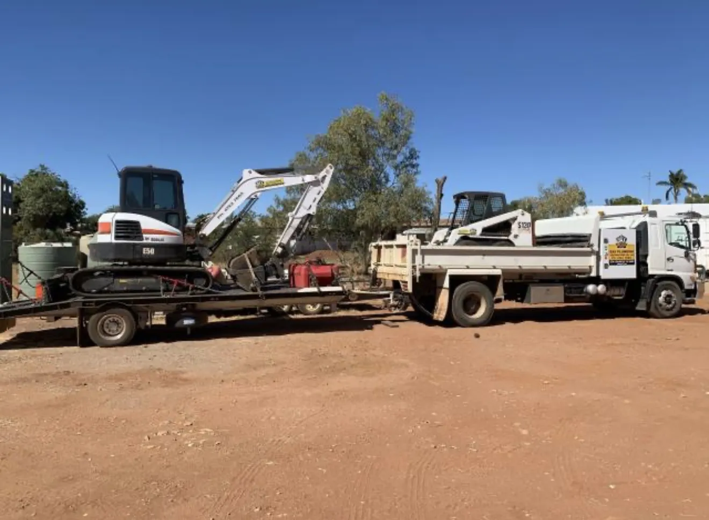
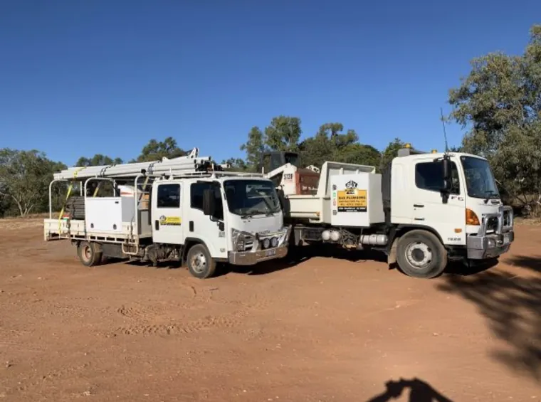
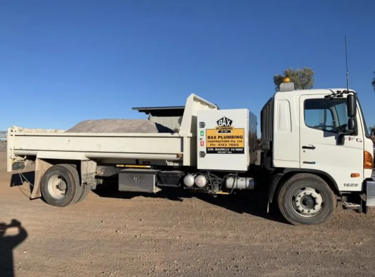

In Mount Isa since 1984
Bax Plumbing Contractors has been fixing the town’s hot water, gas, drains and roofs since 1984, from our yard on the Barkly Highway in Miles End.
Local, and here for the long haul
We live and work in the Isa. We know the town’s older houses and pipework, and how heat, dust and hard ground affect plumbing out here. When we do a job, we expect to see you again for the next one, so we do it right the first time.
Licensed for the work
- Licensed with the Queensland Building and Construction Commission (QBCC)
- Licensed gas fitters for gas installation and repairs
- Residential, commercial and industrial work
The right gear
Our trucks carry drain machines, a high-pressure hydro jetter and drain cameras, so most problems can be found and fixed on the first visit. For bigger drainage jobs we bring our own excavator, skid steer and tipper, so there’s no waiting on hire equipment.



Talk to a local plumber
Monday to Friday, 7 am – 5 pm, with after-hours call-outs for emergencies.